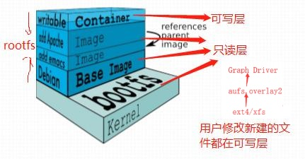

Docker 镜像
镜像是构建Docker的基石，用户基于镜像来运行自己的容器。镜像也是Docker生命周期中的“构建”部分
Docker镜像含有启动容器所需要的文件系统及其内容，因此其用于创建并启动docker容器
1.docker镜像包含了启动容器/虚拟机所依赖的所有文件、文件系统
包括程序文件，库文件，配置文件,数据目录等等
2.采用分层构建机制，最底层为bootfs，其之为rootfs
bootfs：
在所创建的容器中是看不到的，用于系统引导的文件系统，包括bootloader和kernel，容器启动完成后会被卸载以节约内存资源；把对应的对容器的管理委托给宿主机的内核
rootfs：
位于bootfs之上，表现为docker容器的根文件系统;
传统模式中，系统启动之时，内核挂载rotfs时会首先将其挂载为“只读”模式，完整性自检完成后将其重新挂载为读写模式
docker中，rootfs由内核挂载为“只读”模式，容器启动完成rootfs也不会以读写方式重新挂载
docker容器的用户空间和根文件系统一直都是只读的
docker中，rootfs由内核挂载为“只读”模式，而后通过“联合挂载(AUFS)”技术额外挂载一个“可写”层
注意：当删除容器时，这个容器自有的“可写”层会一起被删除
镜像层级
位于下层的镜像称为父镜像（parent image），最底层的称为基础镜像（base image）
最上层为“可读写层”，其下的均为“只读”层；
a.完整的docker镜像包括bootfs,rootfs
b.而rootfs又包括Base Image+自定义的镜像层+可写层writable
除了writable是可写层，其他都是只读层
c.而可写层writable并不是容器镜像自带的；而是创建容器时自动在镜像的最上层添加一个可写层，这个可写层writable是属于容器的
d.如果基于同一个镜像创建多个容器，那么可写层是各个容器独占的，只读层是共享的
e.可写层是可以自定义修改，把可写层保存为镜像，再和原始镜像进行叠加成一个自定义的镜像,可以作为基础镜像使用了，一般不这么做，而是通过dockerfile自定义镜像

AUFS
Advanced multi-layered unification filessystem：高级多层统一文件系统
Docker最初使用aufs作为容器文件系统层，它目前仍作为存储后端之一来支持；
aufs竞争产品是overlayfs2，后者自从3.18版本开始被合并到Linux内核；
aufs是一种支持联合挂载的文件系统，支持不同目录挂载到同一个目录，挂载对用户来说是透明的。
Docker的graph driver主要用于管理和维护镜像，包括把镜像从仓库下载下来，到运行时把镜像挂载起来可以被容器访问等，都是graph driver做的
镜像原理
ext4和xfs默认是不支持联合挂载和写时复制机制的
写时复制
可以在多个容器之间共享镜像，每个容器启动时不需要单独复制一份镜像文件
将所有镜像层以只读方式挂载到一个挂载点，在上面覆盖一个可读写的容器层。
写时复制配合分层机制减少了镜像对磁盘空间的占用和容器启动时间
文件操作
读
从最顶层的读写层开始向下寻找，本层没有则根据层与层之间的关系到下一层找
写
如果文件不存在则在读写层新建一个，否则向上面一样从顶层开始查找，找到后复制到读写层进行修改
删
如果文件仅仅在读写层则直接删除；否则需要删除读写层的备份，而不会真正删除底层文件
增
在容器中创建文件时，新文件被添加到容器层中。
只有运行中文件系统发生变化，才会把变化的内容写到读写层，并隐藏只读层中的老版本文件

Docker提供了各种基于不同文件系统实现的存储驱动来管理实际的镜像文件
默认在/var/lib/docker/image/overlay2/
镜像在设计上将元数据和文件存储完全隔离。
Docker管理元数据采用的也正是从上至下repository、image、layer是3个层次。
所以repository与image两个元数据并无物理上的镜像文件与之对应，
layer则存在物理上的镜像文件与之对应。
仓库元数据
文件中存储了所有版本镜像的名字和tag以及对应的镜像ID（image/aufs）
镜像元数据
文件中存储了镜像架构、操作系统、默认配置、该镜像的容器ID和配置，构建镜像的历史信息以及rootfs组成（image/aufs/imagedb/content/sha256）
分层元数据
镜像层
描述不可改变的镜像层（image/aufs/layerdb/sha256）
容器层
描述可读写的容器层（image/aufs/layerdb/mounts/），读写层的ID也对应容器的ID
管理命令
docker image 相关命令
docker imges:镜像的管理命令
ls： 查看本地所有的镜像列表
build: 新建
import: 从归档文件中创建镜像
export :将文件系统作为一个tar归档文件导出到STDOUT
inspect: 查看下载/创建的镜像详细信息
可以查看下载的某个镜像的具体信息
如：CMD:镜像启动默认运行的命令
Volume:
network:
下文中构建docker file时这些都可以自定义
load: 从tar文件导入镜像
prune: 删除未使用的镜像
pull：从远程仓库拉取镜像到本地
push: 把本地镜像推到远程的Registry
rm: docker image rm = docker rmi 删除镜像
tag: 给镜像打标签
save: 镜像文件导出为tar文件
镜像制作：
基于容器制作
在容器中完成操作后制作；
基于镜像制作
编辑一个Dockerfile，而后根据此文件制作；
基于容器制作：
docker commit
docker commit [OPTIONS] CONTAINER [REPOSITORY[:TAG]]
-author, -a 指定作者
--pause, -p 暂停运行容器，保持数据一致
--change, -c 镜像内部默认运行的命名
docker commit -a "liu<8@qq.com>" -c 'CMD ["/bin/httpd","-f","-h","/data/html"]' -p b1 liu/httpd:v0.2
上传docker hub
docker login 登录到docker hub
输入账号密码，正常登录后
push镜像
docker image push liu/httpd:v0.2
正常情况下，如果hub仓库中有底层的基础镜像，则只推变化的镜像层
这种方式适用于测试环境：
将镜像文件导出为tar文件:
docker save
Save one or more images to a tar archive (streamed to STDOUT by default)
docker save [OPTIONS] IMAGE [IMAGE...]
docker save -o myimag.gz liu/httpd:v0.1
从tar文件导入镜像 ：
docker load
Load an image from a tar archive or STDIN
docker load [OPTIONS]
--input, -i Read from tar archive file, instead of STDIN
--quiet, -q false Suppress the load output
docker load -i myimag.gz